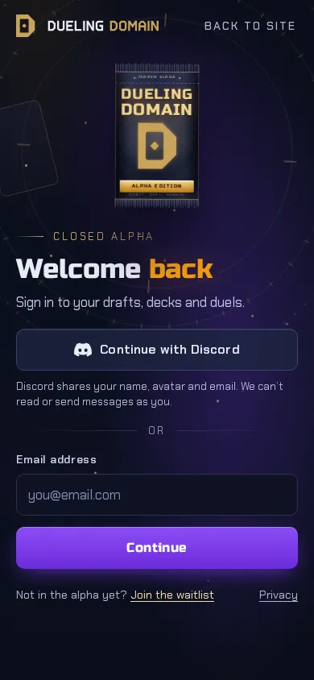
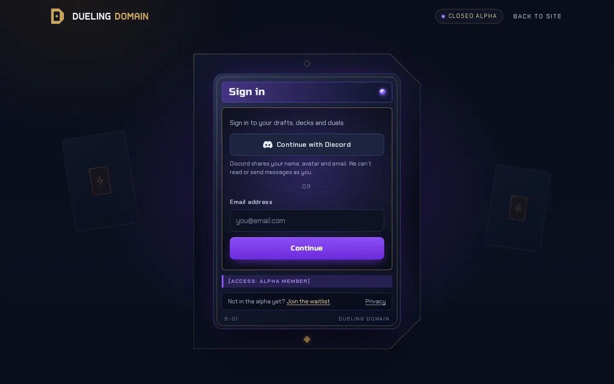
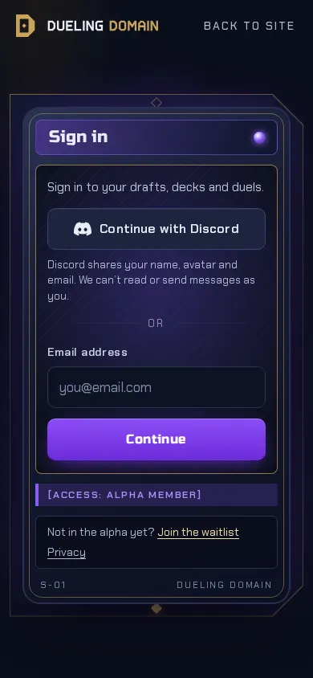
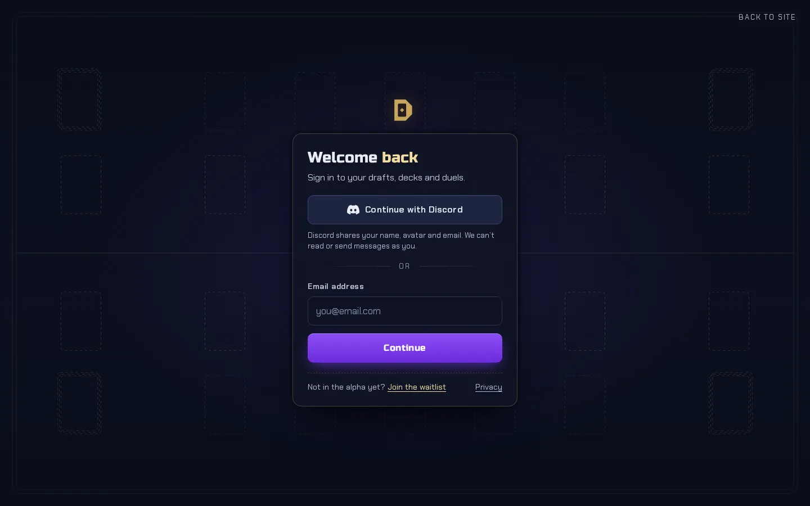
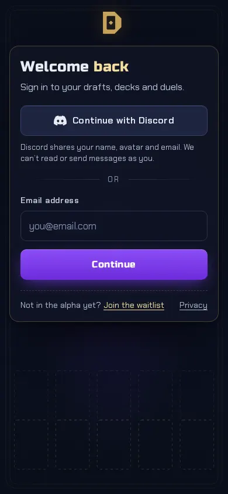

A. Sealed pack


The marketing hero, one click on. The brand pack stands beside the form, sealed while you are signed out. On success it tears open and the app loads.
Sign-in workshop · Closed alpha
Same form zone in all three: email and password, or Continue with Discord, with a single card that swaps its steps in place. Only the stage around it changes. Every concept has twelve states at desktop (1440 by 900) and phone (390 by 844), and A adds the pack-torn success frame. Use the strip at the bottom of each live page to switch states.

The marketing hero, one click on. The brand pack stands beside the form, sealed while you are signed out. On success it tears open and the app loads.


The form is a card, seated in an oversize D that echoes the logo mark. Sign in is the front. Every later step is the back of the card, so each step flips it.


Speed over ceremony. A near-empty dark field with faint duel-table zones in thin gold light, and one compact centred panel with the mark above it.
Concept A
The marketing hero, one click on. The brand pack stands beside the form, sealed while you are signed out. On success it tears open and the app loads.
Form zone is a plain single column, no frame of its own. Every step swaps in place under the same heading slot, so each Clerk step maps one to one. The pack never changes with the step, which keeps it independent of Clerk.
The form column is the prebuilt card (appearance variables, transparent card, our fonts). The pack, rings and backdrop are plain page elements outside it, so nothing fights the component. The tear needs to run after the redirect (a short "signing in" route on the app side) unless we go custom.
Concept B
The form is a card, seated in an oversize D that echoes the logo mark. Sign in is the front. Every later step is the back of the card, so each step flips it.
Each step is one card, front for the start step and back for everything after. One card is visible at a time, the other face is inert. The name bar and type line are decoration that follow the step.
Clerk's appearance API restyles, it does not restructure. The name bar, type line, footer code and flip cannot be added around the prebuilt card. With the prebuilt card the honest version is a card frame around it with no flip, which loses most of the idea. A custom flow builds it as drawn.
Concept C
Speed over ceremony. A near-empty dark field with faint duel-table zones in thin gold light, and one compact centred panel with the mark above it.
A single 400px panel; every step swaps inside it with the same heading, form and footer rhythm. This is the closest to what Clerk renders by default.
The panel is Clerk's card re-skinned with appearance variables. The table is a fixed background SVG behind it. No wrapper, no custom steps needed.
Same in all three concepts. Step and error names are from memory of Clerk's docs and should be checked before the build.
| Screen | Clerk step |
|---|---|
| Sign in | Start step: identifier (email) plus the Discord social connection. Identifier-first, so the password is asked on the next step. |
| Password, wrong password | First factor, password. Wrong password is a field error on the same step. Pre-created members have no password, so the hint points them to Forgot password. |
| Email code, new password | One code step reused for sign-up verification, Forgot password (code, then new password) and the occasional new-device check. No passwordless sign-in. |
| Create account, username taken | Sign-up from the invite link (the invitation ticket carries and locks the email). Username, password, terms consent and the bot-check slot sit on the sign-up step. Username taken is a field error. |
| Not invited (sign in) | Identifier not found, worded for the waitlist. |
| Not invited (sign up) | Sign-up blocked in Waitlist mode. |
| Banned | Locked or banned user, shown as a terminal step. |
| Service error | Global banner above the form; the form keeps its values. |
| Signing in | Session created and redirecting. Short, 1s or less. |
Prebuilt component or custom flow is still open. If Clerk Elements is considered for the custom route, check its current support status first.